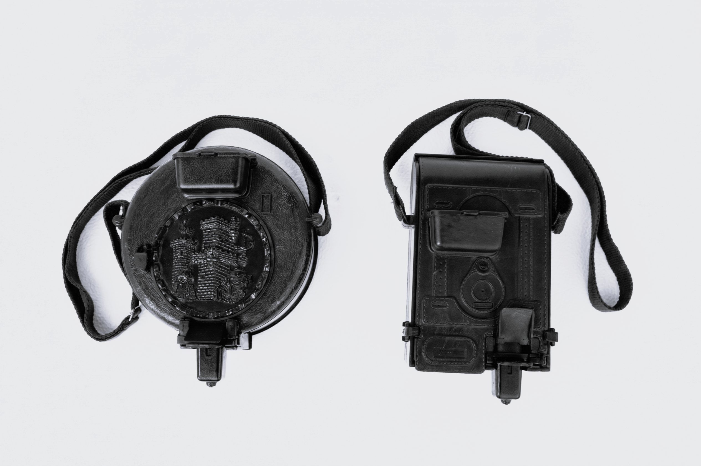

Historia · Desde 1969
La historia de cómo un festero de Moros y Cristianos inventó la cantimplora y transformó para siempre la seguridad en las fiestas de pólvora.

En palabras de Galayo
"Allá por los años 70, tras muchos años disparando en los alardos de las fiestas de Moros y Cristianos, me surgió la idea de crear algo para facilitarnos las cosas y para disparar con mayor seguridad."
Antes de la cantimplora, los festeros transportaban la pólvora con lo que podían: cajones de madera, bolsas de plástico, botellas de vidrio, cartuchos artesanos de papel de periódico. Cada disparo requería la ayuda de un «cargador», una persona a su lado que transportara la pólvora y le fuera cargando el arma a ojo.
Fue entonces cuando Galayo inventó la cantimplora. Una solución que, de golpe, supuso la desaparición de la figura del cargador: una única persona podía cargarse su propio trabuco y no necesitaba de ayuda externa.
Las primeras cantimploras estaban fabricadas con chapa y forradas con piel en color rojo, marrón o negro. Materiales que, ante una explosión, se transformarían en metralla —un riesgo que el propio inventor reconoce— pero que abrieron el camino para seguir trabajando, mejorar el diseño y aumentar la seguridad de estos depósitos.
Hoy son ya dos los modelos diseñados, cada uno con mayores medidas de seguridad que el anterior. Un legado del que Galayo se siente orgulloso: no solo como inventor, sino como festero que vive estas tradiciones con el corazón.
Las primeras cantimploras


Los primeros modelos: chapa con forro de piel en rojo, marrón o negro
Evolución
Cada generación de cantimplora ha incorporado mejoras de seguridad sobre la anterior.
Galayo inventa la primera cantimplora: chapa forrada con piel. Desaparece la figura del «cargador» en las fiestas de Moros y Cristianos.
Nuevo diseño con materiales más seguros. Se introducen mejoras estructurales para reducir el riesgo de metralla ante una explosión accidental.
El modelo 1980 se convierte en el estándar del sector. Mayor capacidad, mejor ergonomía y materiales específicamente seleccionados para uso pirotécnico.
Galayo desarrolla el kit de adaptación a la nueva legislación vigente, garantizando el cumplimiento íntegro de la normativa para todos los modelos.
Más de 50 años de trayectoria. Tres modelos patentados. Fabricación exclusiva en Ibi, Alicante. El único fabricante industrial de cantimploras en España.
¿Hablamos?
Más de medio siglo de experiencia en cada pieza. Consulta nuestros modelos y precios sin compromiso.